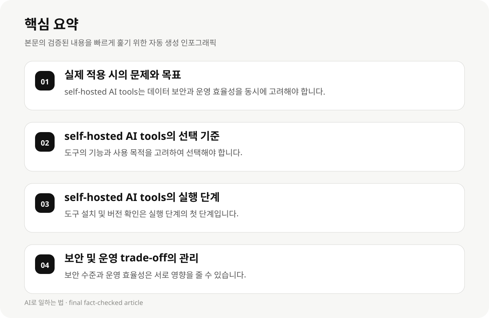

실제 적용 시의 문제와 목표 #
개발자 및 AI 실무자가 self-hosted AI tools를 실제 업무에 적용할 때, 어떤 도구를 선택해야 할지, 어떻게 시작해야 할지 판단하기 어렵습니다. 이 가이드는 이러한 선택 과정에서 중요한 고려 사항과 실행 단계를 제공합니다.
self-hosted AI tools는 데이터가 제3자에게 전달되지 않도록 보안을 강화하며, 모델이 사용자에게 제공되는 환경에서 실행됩니다. 그러나 실제 적용 시에는 도구의 적합성, 보안 및 운영 trade-off, 실행 단계 등 다양한 요소가 고려되어야 합니다.
- self-hosted AI tools는 데이터 보안과 운영 효율성을 동시에 고려해야 합니다.
- 보안 및 운영 trade-off는 도구의 특성, 사용 목적, 기술 수준 등에 따라 달라질 수 있습니다.
self-hosted AI tools의 선택 기준 #
self-hosted AI tools의 선택 기준은 다음과 같은 요소에 따라 결정됩니다: 도구의 기능, 보안 수준, 운영 용량, 사용 용도, 기술 지원, 최신 버전 여부 등입니다.
2026년 9월 업데이트된 도구 목록에 따르면, Ollama, LM Studio, AnythingLLM, Jan, LocalAI, Text Generation WebUI 등이 포함되어 있습니다. 이 도구들은 Apple Silicon, NVIDIA GPU, 또는 CPU를 지원하며, 사용 목적에 따라 선택이 필요합니다.
- 도구의 기능과 사용 목적을 고려하여 선택해야 합니다.
- 최신 버전 확인이 필요하며, 일부 도구는 아직 최신 상태가 아니므로 주의가 필요합니다.
self-hosted AI tools의 실행 단계 #
self-hosted AI tools의 실행 단계는 다음과 같은 단계로 구성됩니다: 도구 설치, 모델 설정, 데이터 준비, 모델 실행, 보안 및 운영 관리 등입니다.
설치 단계에서는 도구의 설치 방법, 버전 확인, 환경 설정 등을 고려해야 합니다. 모델 설정에서는 사용 목적에 맞는 모델을 선택하고, 데이터 준비에서는 필요한 데이터를 준비해야 합니다.
- 도구 설치 및 버전 확인은 실행 단계의 첫 단계입니다.
- 모델 선택과 데이터 준비는 실제 적용 시의 핵심 단계입니다.

보안 및 운영 trade-off의 관리 #
self-hosted AI tools의 보안 및 운영 trade-off는 도구의 보안 수준, 사용 목적, 기술 지원 등에 따라 달라질 수 있습니다. 보안 수준이 높은 도구는 운영 효율성에 대한 영향을 줄 수 있지만, 반대로 운영 효율성이 높은 도구는 보안 수준이 낮을 수 있습니다.
보안 및 운영 trade-off는 실제 적용 시에 따라 달라질 수 있으므로, 도구의 특성과 사용 목적을 고려하여 선택해야 합니다.
- 보안 수준과 운영 효율성은 서로 영향을 줄 수 있습니다.
- 도구의 특성과 사용 목적을 고려하여 trade-off를 관리해야 합니다.
실제 적용 시의 고려 사항과 제약 #
self-hosted AI tools의 실제 적용 시에는 다음과 같은 고려 사항이 필요합니다: 도구의 최신 버전 확인, 보안 및 운영 trade-off의 관리, 사용 목적에 맞는 도구 선택, 실행 단계의 체계적 계획 등입니다.
2026년 9월 업데이트된 도구 목록은 일부 도구가 아직 최신 상태가 아니므로, 실제 적용 시에는 최신 버전 확인이 필요합니다. 또한, 보안 및 운영 trade-off는 실제 적용 시에 따라 달라질 수 있으므로, 도구의 특성과 사용 목적을 고려해야 합니다.
- 최신 버전 확인은 도구의 적합성에 영향을 줄 수 있습니다.
- 보안 및 운영 trade-off는 도구의 특성과 사용 목적에 따라 달라질 수 있습니다.
실행 단계의 실전 적용 #
self-hosted AI tools의 실행 단계는 다음과 같은 단계로 구성됩니다: 도구 설치, 모델 설정, 데이터 준비, 모델 실행, 보안 및 운영 관리 등입니다.
실제 적용 시에는 도구의 설치 방법, 버전 확인, 환경 설정, 모델 선택, 데이터 준비, 모델 실행, 보안 관리 등이 필요합니다. 이 단계는 실제 업무에 적용할 때 중요한 단계입니다.
- 도구 설치 및 버전 확인은 실행 단계의 첫 단계입니다.
- 모델 선택과 데이터 준비는 실제 적용 시의 핵심 단계입니다.
실패 사례와 해결 방안 #
self-hosted AI tools의 실전 적용 시에는 다음과 같은 실패 사례가 발생할 수 있습니다: 도구의 적합성 부족, 보안 및 운영 trade-off의 관리 부족, 실행 단계의 계획 부족 등입니다.
실패 사례는 도구의 특성, 사용 목적, 보안 및 운영 trade-off의 관리 등에 따라 달라질 수 있으므로, 실제 적용 시에는 이러한 요소를 고려해야 합니다.
- 도구의 적합성은 실패 사례의 핵심 요소입니다.
- 보안 및 운영 trade-off의 관리는 실패 사례의 관리에 중요한 요소입니다.